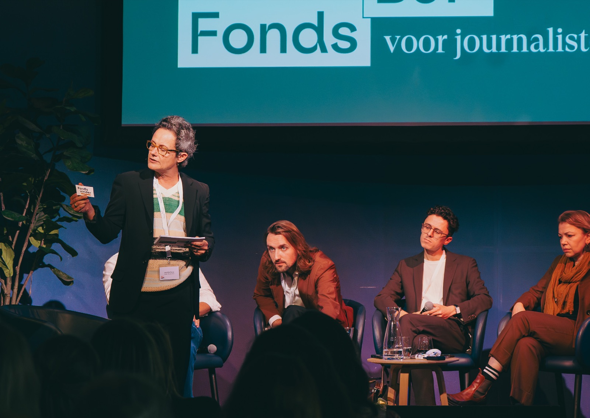

Uitgewerkt in deze versie: Voorwoord, Het Fonds BJP in 2025, Codes, Risico’s en Jaarrekening 2025. De overige hoofdstukken zijn aanklikbaar en bevatten voorlopig een plaatshouder.
Voorwoord
Bier en Boerkini’s aan de Belgische kust waar de tijd niet stilstaat.Een kleurrijk fotografisch tijdsbeeld met strandtaferelen van badgasten die met elkaar in zee gaan ongeacht welke cultuur of traditie of badkostuum. Een antropologische reis langs gemeenschappen aan zee met ieder hun eigen culturele uitingen. Door journalist en fotograaf Annie van Gemert.
Het werk werd er in 2025 voor de journalist in Nederland niet gemakkelijker op. Door handhaving van freelancewetgeving, juridische dreiging en bezuinigingen op journalistieke redacties staat de gehele journalistiek onder druk, en juist afgelopen jaar landde die druk voor een groot deel op de schouders van freelance journalisten. En daardoor ook bij het Fonds, omdat het onze missie is journalisten, onder wie freelancers, te ondersteunen bij hun journalistieke werk.
Het Fonds Bijzondere Journalistieke Projecten houdt in dit snel veranderende landschap vast aan zijn kernopdracht: het versterken van de onafhankelijke journalistiek door journalisten te ondersteunen en tegelijk te investeren in de generatie van morgen. We bewaken journalistieke onafhankelijkheid en stimuleren kwaliteit via financiering, kennisuitwisseling en opleiding.
Dat doen we met steun voor onderzoeken en andere bijzondere projecten, met beurzen en traineeships gericht op talentontwikkeling, en in toenemende mate ook door journalisten met specifieke scholing of regelingen te helpen koers te bepalen in een veld dat voortdurend in beweging is.
De aangekondigde handhaving op freelance-wetgeving zorgt ervoor dat veel redacties terughoudender worden in het werken met freelance journalisten. Zij zijn bang dat hun werkverhouding bij eventuele controle gezien zal worden als verkapt dienstverband. Uit de NVJ Arbeidsmarktmonitor blijkt dat bijna drie op de tien freelancers (29,3%) stelt dat opdrachtgevers bang zijn om zzp’ers in te huren. Daarnaast is (het anticiperen op) SLAPPS (strategic lawsuit against public participation) een deel van (de overwegingen over) journalistieke projecten voor redacties geworden, waardoor soms terughoudendheid gevoeld wordt op onderzoeksjournalistieke projecten met freelancers te werken. Op hun onderzoeksproces heb je immers net wat minder zicht dan op dat van vaste krachten én, wanneer het tot juridische procedures komt, kunnen die extra in de papieren lopen wanneer tijdsinvestering van freelancers ook voor die procedures vergoed moet worden. Daarnaast heeft het besluit van de Amerikaanse overheid om USAID vrijwel geheel af te schaffen eveneens gevolgen voor sommige journalisten, direct of indirect. Veel journalistieke redacties en initiatieven vooral in Zuid- en Oost-Europa verloren hun funding waardoor sommige samenwerkingen en projecten wegvielen. In reactie daarop verschoven sommige (Nederlandse) fondsen hun aandacht (deels) naar het opvangen van de gaten die daar gevallen zijn, met minder aandacht voor Nederland tot gevolg. Die teruglopende ruimte wordt niet direct opgevangen: mede door bezuinigingen bij de NPO waren er in 2025 juist minder journalistieke vacatures dan in 2024. De arbeidsmarktmonitor constateert dan ook dat freelancen ‘voor een steeds grotere groep iets [is] wat ‘erbij’ wordt gedaan: werk naast een andere baan, in de journalistiek of elders’, geen wenselijke ontwikkeling voor journalistieke onafhankelijkheid. Dat terwijl freelance journalisten een belangrijke bijdrage leveren aan de diversiteit van achtergronden en perspectieven in de journalistiek en vaak vernieuwende samenwerkingen en initiatieven ontplooien.
Naast deze specifiek voor freelance journalisten geldende uitdagingen, kwam ook in de reeds bekende omstandigheden voor de journalistiek geen positieve verandering. Beperkte budgetten, een magere score voor vertrouwen in de journalistiek, generatieve AI-modellen die zich – zonder vergoeding – voeden met journalistieke content en zo (de verdienmodellen van) de journalistieke- en mediasector bedreigen. ‘Big tech’, die door hun bepalende rol in wie wanneer welke informatie online te zien krijgt, de democratische rol van de journalistiek onder druk zetten, net als verdachtmakingen van de journalistiek door politieke machthebbers.
In Nederland is daarbij de conglomeratie van de media een belangrijk aandachtspunt, zeker sinds in juni 2025 de overname van RTL door DPG werd goedgekeurd. Daarmee begeeft DPG zich ook in de televisiewereld en breidt het zijn invloed op de informatievoorziening uit. DPG en Mediahuis hebben samen ruim 90 procent van de dagbladen in Nederland in handen en ruim 30 procent van de banen in de journalistiek. De betrokkenen bij de overname stellen dat deze concentratie de enige manier is om tegenwicht aan techreuzen te bieden, tegenstanders zien het als een bedreiging voor onafhankelijkheid en veelstemmigheid. Duidelijk is dat titels onder deze uitgeverijen veel van hun ‘content’ uitwisselen, die vaak woordelijk wordt herhaald bij verschillende titels. Ook is helder dat de mediaconcentratie niet bijdraagt aan de onderhandelingspositie van freelancers om eerlijke tarieven voor hun werk te bedingen.
Waar de meningen over de wenselijkheid van de overname van RTL door DPG verdeeld zijn, zijn die dat nauwelijks over de bedreigingen van big tech voor media en journalistiek. In november 2025 stuurden vrijwel alle media, publiek en privaat, onder aanvoering van Stichting Democratie en Media, een brandbrief aan informateur Sybrand van Haersma Buma. De boodschap was helder: “Onze samenleving verliest haar greep op een op waarheidsvinding gerichte en pluriforme informatievoorziening door de dominante rol van mondiale techbedrijven”. Dit is volgens de briefschrijvers ‘een ernstige bedreiging voor de democratische weerbaarheid [en] de strategische autonomie en daarmee de veiligheid van Nederland’. De brandbrief sluit inhoudelijk aan bij de adviezen die de Wetenschappelijke Raad voor het Regeringsbeleid (WRR) in 2024 uitbracht in het rapport ‘Aandacht voor Media’: een nieuw en op de huidige uitdagingen ingericht mediabeleid en implementatie en handhaving van bestaande Europese wetgeving. Het is aan het in februari 2026 geïnstalleerde minderheidskabinet met de aanbevelingen uit de brandbrief en die van de WRR aan de slag te gaan. In het coalitieakkoord wordt aangekondigd dat er een integraal mediabeleid komt en dat er blijvend geïnvesteerd wordt in ‘de professionalisering van de publieke omroep, onafhankelijke en regionale journalistiek en persveiligheid’.
Het Fonds blikt in dit verslag terug op de regelingen en activiteiten van 2025, en op de impact ervan – op journalisten en hun werk, op het journalistieke veld en op de maatschappij. We zien ernaar uit onze impactvolle werkzaamheden in 2026 en erna voort te zetten.
Joëlle TerburgDirecteur-bestuurder31 maart 2026
Het Fonds BJP in 2025
This Bittersweet Life: Transnistrië tussen Oost en West – Uitgeverij SlowdocsIn 1992 verklaarde Transnistrië zichzelf onafhankelijk van Moldavië. De oorlog in Oekraïne bracht de niet-erkende ministaat op een keerpunt. Fotograaf en documentairemaker Paul van der Stap legt vast wat 35 jaar onafhankelijkheid de Transnistriërs heeft gebracht.
De drie pijlers (projecten, ontwikkeling en versterking) van het Fonds BJP met bijbehorende regelingen en activiteiten in 2025. Klik op een pijler om de regelingen en activiteiten te zien.
Projectsubsidies Journalistiek+
Beeldende Journalistiek
Bereik je doelgroep
Vertaal onderzoek naar Online Mediaproductie
Regeling Beeldende/ Verhalende journalistiek
Regeling Onderzoeksjournalistiek
Vooronderzoek
Uitvoering
Dossiersubsidies
Projectsubsidies Caribisch deel Koninkrijk
Press Play
Ingrid Harms Stipendium
Coaching
Residenties
Netherlands Institute for Advanced Study (NIAS)
Waag Future Lab
Besiendershuis
Conferentiesessie NLJF Caribische Journalistiek
Fondsvinder voor journalisten
Samenwerkingsworkshop
Brusseprijs
Toegang tot Company.info
Sessie VVOJ over mentale gezondheid
Inspiratietraject: Nieuwe Media
Podcast Perspectief
Traineeships onderzoeksjournalistiek
Beurs Journalistieke Ontwikkeling
Gesteunde trajecten
RFG Media: New Voices
Onderzoekslab
Investico Masterclass
Op Streek
Scholingsaanbod
AI-cursus
Masterclass VVOJ
Datajournalistiek HU
Ticketacties
VVOJ Conferentie
Dataharvest
b° future festival
Global Investigative Journalism Forum
Power of Storytelling
iMEd International Journalism forum
International Journalism Festival Perugia
Nederlands Journalistiek Festival Caribische journ.
Masterclass Financiële Journalistiek
Makersdag Oorzaken Festival
Journalistiek+ (in de lijsten gemarkeerd met een oranje kader)
Het netwerk van het Fonds Bijzondere Journalistieke Projecten (Fonds BJP) kwam op vrijdag 10 oktober samen in Felix Meritis in Amsterdam om het 35-jarig bestaan te vieren.

Foto: Isaac Owusu
Die dag vierden we alles wat we als Fonds belangrijk vinden: aandacht voor bijzondere en verdiepende journalistieke projecten, voor professionele ontwikkeling, en voor versterking door middel van gesprek en uitwisseling. De verscheidenheid van de aanwezigen – van jonge makers tot ervaren onderzoeksjournalisten, van datajournalisten tot fotografen en podcastmakers, van beleidsmakers tot vertegenwoordigers van andere fondsen – laat zien hoe centraal de rol van het Fonds BJP in de afgelopen periode is geworden.
In 2025 werkten we hard om een recordaantal aanvragen voor projectsubsidies te verwerken. Een ontwikkeling die laat zien dat het ons steeds beter lukt een diverse groep journalisten en makers te bereiken. Tegelijkertijd is het een teken dat de rol van onafhankelijke subsidie om diepgravende en tijdrovende projecten mogelijk te maken steeds groter wordt. Ook het animo voor de traineeships onderzoeksjournalistiek was groot: meer dan duizend sollicitaties voor negen traineeplaatsen maken duidelijk hoeveel mensen de onderzoeksjournalistiek in zouden willen en hoe weinig plaats er daadwerkelijk op redacties is.
Naast de projectsubsidies en traineeships ontwikkelden en vervolgden we verschillende activiteiten om maatwerk te kunnen leveren: zo steunden we met Press Play beginnende journalisten zonder netwerk in de journalistiek bij hun eerste grote project, gingen negentien journalisten in het Caribisch deel van het Koninkrijk met subsidie aan de slag met diepgravende projecten en begonnen acht ervaren journalisten op regionale en lokale redacties aan ons programma Op Streek waarin ze vijf maanden gezamenlijk werken aan het versterken van hun onderzoeksjournalistieke vaardigheden. Daarnaast lanceerde het Fonds de podcast Perspectief, de uitkomst van het Inspiratietraject Nieuwe Media. In vijf afleveringen wordt het veranderende medialandschap besproken: van publiek en transparantie tot de kansen en uitdagingen van online media, product thinking en de positie van onafhankelijke journalistiek in een digitale wereld.
In 2025 bood het Fonds onder andere de driedaagse cursus Praktische AI in de Journalistiek aan. Hiermee kregen journalisten de kans om zich te verdiepen in AI-toepassingen, kritisch te leren kijken naar kansen en risico’s en praktisch te experimenteren met AI-tools binnen hun eigen werkpraktijk. Ook werden plekken beschikbaar gesteld voor de vierdaagse Basiscursus Financiële Journalistiek en voor bezoek aan verschillende journalistieke conferenties in binnen- en buitenland. De veranderende eisen aan journalistiek vragen veel van journalisten: zij moeten actief investering in de ontwikkeling van vaardigheden en kennis. Zeker voor freelance journalisten is dat een uitdaging: ze betalen niet alleen tickets en reiskosten maar kunnen op de dagen waarop ze scholing volgen bovendien geen andere werkzaamheden verrichten. Daarom compenseren wij zowel hun kosten als hun tijdsinvestering.
Ook zetten we in 2025 stevig in op de ondersteuning van journalisten in het Caribisch deel van het Koninkrijk. In 2024 begon het Fonds BJP met een verkennend traject door middel van onderzoek op afstand, in 2025 bezochten we tijdens een werkreis vijf van de zes Caribische eilanden binnen het Koninkrijk, waar we gesprekken voerden met lokale journalisten en makers om te onderzoeken hoe steun en subsidiëring het beste op maat kunnen worden aangeboden. Zie voor meer informatie het kader Caribische journalistiek.
Uitgangspunten en werkwijze
Het Fonds BJP heeft als uitgangspunt dat we er zijn voor journalisten en journalistieke makers zelf. Ons werk bevindt zich op drie pijlers:
het mogelijk maken van projecten;
het stimuleren van professionele ontwikkeling;
de versterking van de journalistieke praktijk van individuele journalisten en daarmee van de sector.
Door ons op die vlakken in te zetten voor journalisten zelf, kunnen zij hun belangrijke journalistieke rol onafhankelijk en zo goed mogelijk vervullen ten behoeve van de bescherming van de democratie, die we Koninkrijksbreed beschouwen.
De werkwijze van het fonds is zo veel mogelijk transparant en bottom-up: we identificeren belangrijke thema’s voor de journalistiek, gaan daarmee zelf aan de slag en stellen journalisten in staat hetzelfde te doen. Op die manier werken we bijvoorbeeld aan thema’s als privacy en databescherming, mentale gezondheid, diversiteit en inclusie en de rol van sociale media.
Het fonds hanteert een definitie van journalistiek waarin een breed scala aan, publicatievormen, makers, onderzoeksmethodes en media past. Zo dragen we bij aan een toekomstbestendigde sector, waarin ruimte is voor alle stemmen en perspectieven die nodig zijn om de journalistiek haar democratische rol te laten vervullen. Het gegeven dat het fonds subsidie krijgt uit twee subsidiestromen, de cultuurbegroting (BIS) en de mediabegroting, stelt ons in staat die benadering te hanteren. Daarnaast loopt sinds enkele jaren het project Journalistiek+, waarmee we binnen de drie pijlers regelingen en activiteiten ontplooien die vernieuwing in methodes, denkwijzen en publicatievormen stimuleren. Zo moedigen we journalisten aan om zich te verhouden tot technologische, digitale en maatschappelijke ontwikkelingen. In het overzicht van activiteiten zijn ze aangegeven met een oranje kader, in het verslag worden onder de betreffende hoofdstukken de Journalistiek+ activiteiten steeds apart uitgelicht.
We beschouwen het als onze rol te faciliteren wat journalisten nodig hebben en om thema’s te agenderen die voor journalisten en de impact van hun werk van belang zijn, zoals publieksbereik van journalistiek en omgaan met zowel de risico’s als mogelijkheden van AI. We steunen projecten van journalistieke biografieën tot harde datajournalistiek, van live journalism tot fotografie en van regionale artikelen tot verhalende podcasts.
Om dat op een goede manier te doen, staan we als Fonds BJP midden in het journalistieke veld: het motto ‘voor en door journalisten’ waarmee we werden opgericht houden we dan ook zoveel mogelijk in acht, met een team dat voor een groot deel journalistieke ervaring en maakervaring heeft en met een Raad van Toezicht van (voormalig) journalisten en mensen werkzaam in journalistiek en media. Daarnaast werken we samen met een groep coaches en commissieleden die allemaal journalist zijn, met uiteenlopende achtergronden en expertise – die elkaar op andere plekken wellicht niet snel zouden treffen, maar elkaar ontmoeten bij het Fonds voor goede gesprekken over het vak.
In dit verslag kijken we terug op wat we het afgelopen jaar hebben bereikt en welke impact dat heeft gehad. Ook in de toekomst blijven we ons inzetten voor onafhankelijke journalisten die hun onmisbare rol in onze democratie vervullen, juist nu die onder druk staat en het medialandschap ingrijpend verandert.
Dichter aan het front
Michiel Driebergen
“Deze dichters brengen je dichter bij het slagveld, dichter bij een antwoord op de vraag wat oorlog met een mens doet.”
Uitgekozen door NRC als een van de beste podcasts van 2025 Foto: Johanna Maria Fritz Ostkreuz
Regeling Onderzoeksjournalistiek
Het werk van oorlogsjournalist Michiel Driebergen speelt zich voornamelijk af in ‘de andere zone’, zoals Driebergen het zelf noemt. Hoe maak je duidelijk wat oorlog is aan mensen die leven in ‘de gewone wereld’? “Er zijn al zoveel verhalen verteld over oorlog, maar toch blijft het iets onbegrijpelijks. Ik hoop dat ik luisteraars met mijn podcast anders naar het journaal kan laten kijken”, zo vertelt hij.
PublicatieVPRODichter aan het frontMichiel Driebergen, Kateryna Shutalova, Edwin Koopman
Met steun van een Uitvoeringssubsidie van het Fonds BJP maakt Driebergen, samen met Edwin Koopman en Kateryna Shutalova, de vierdelige verhalende podcastserie Dichter aan het front. Via de verhalen en gedichten van Oekraïense soldaten wordt invoelbaar wat in gewone taal niet te vangen is. “Militairen leven een gesloten bestaan en kunnen elk moment sneuvelen. In hun gedichten worden hun gedachten en gevoelens vereeuwigd. Oorlogspoëzie is van alle tijden en een aantrekkelijke vorm om mee te werken.”
Maar of deze vorm ook zal werken in een podcast is in het begin nog onzeker voor Driebergen. “Pas bij de eerste edit van de eerste aflevering was ik ervan overtuigd dat het zou werken.” Bovendien brengt de vorm praktische uitdagingen met zich mee. “Hoe vertaal je Oekraïense poëzie op een mooie manier naar het Nederlands? Dat was een ingewikkeld proces. De samenwerking met de vertaler was daarom erg belangrijk. Ook hebben we veel geëxperimenteerd met muziek. Dankzij de subsidie kan je net iets verder zoeken. Het helpt ontzettend dat we daarin niet beperkt waren en zo het verhaal het beste konden vertellen.”
Dat dat gelukt is, laat ook een van de vele positieve reacties van luisteraars zien:
“Ik heb nog nooit een podcast zo privé ervaren. Op mijn oren voelt het net of het verhaal speciaal voor mij verteld wordt. Nog nooit zo meegemaakt.”
Een van de inzichten die Driebergen meeneemt uit dit project, is het belang van samenwerken in een team. “Ik zou nooit in mijn eentje zo’n podcast kunnen maken. Dit project duurde een jaar en je moet blijven geloven in je project, terwijl je dagelijkse werk ook al zoveel is. Bovendien vergt het aangaan van langdurige relaties aan het front een andere aanpak en sociale communicatieve vaardigheid. Militairen gaan van hot naar her en zijn met heel andere dingen bezig dan jou als journalist te woord te staan. Als journalist moet je je kunnen aanpassen aan hun agenda en soms ook een beetje geluk hebben.”
De podcast gaat niet alleen over Oekraïne, maar raakt ook aan universele vraagstukken: hoe is het om zo dicht bij de dood te zijn? Hoe blijf je mens in tijden van oorlog? “Door het project realiseer ik mij dat hoe dichter je bij de mens komt, hoe verder weg je blijft van propaganda en politieke strijd. In die oorlogszone is tragedie en tegelijkertijd ook gewoon leven. Militairen drinken thee, gaan naar een bibliotheek en kopen de nieuwste telefoon. Ik denk dat het gelukt is de militairen als gewone mensen te portretteren. Mensen die keuzes maken en het beste proberen te maken van de beperkte tijd die ze hebben.”
Als oorlogsjournalist zit Driebergen diep in de realiteit van de oorlog. Hij hoopt dat de podcast bijdraagt aan de geschiedschrijving en historici jaren later zal helpen de oorlog te begrijpen vanuit verhalen van de gewone mensen aan het front.
“Werken als oorlogsjournalist brengt risico’s met zich mee, maar ik krijg er veel voor terug: indrukwekkende ontmoetingen en verhalen. Daardoor leer ik heel veel over andere mensen.”
Dichter aan het front is zowel door de Volkskrant als NRC uitgeroepen tot een van de beste podcasts van 2025.
“Zo maakt Dichter aan het front de ellende en de absurditeit van de oorlog bevattelijk.”
De dochter
Harriët Duurvoort
Beeld: uit familiearchief Duurvoort
Regeling Beeldende en Verhalende Journalistiek
“Schrijf het maar als ik er niet meer ben”, was de eerste reactie van de moeder van journalist Harriët Duurvoort, Eva Nijman (1928), op het idee haar levensverhaal op te tekenen. Het verhaal van Eva, een zwart meisje van zes weken oud dat geadopteerd wordt door een gereformeerd wit echtpaar uit Scheveningen. Een verhaal dat ook gaat over racisme, de geboorte van de multiculturele samenleving, identiteit en dat Nederland een spiegel voorhoudt.
PublicatieUitgeverij PluimDe dochter, herinneringen aan anders zijn
In 2013 start Duurvoort met de interviews met haar moeder, die uiteindelijk toch overtuigd is haar verhaal op te schrijven. Informeel en zonder opnameapparatuur.
“Ik dacht dat ik veel wist, maar als je je ouders gaat interviewen, dan komt er toch veel meer boven. In dit verhaal wroet ik als het ware mijn Nederlandse wortels bloot. Het ontsluit ook een enorme rijkdom aan nieuwe anekdotes en ineens opborrelende herinneringen, waar zij mij anders nooit over verteld zou hebben.”
Als journalist vindt Duurvoort het boeiend te zien hoe de kleine persoonlijke familieverhalen in de grote geschiedenis grijpen. De Tweede Wereldoorlog, de dekolonisatie van Indië, de burgerrechtenbeweging in de VS, de decembermoorden in Suriname en de Bijlmerramp in Amsterdam. De vraag is vervolgens hoe je al die losse verhalen in elkaar weeft. “Wat ik uitdagend vond aan het project en wat mij tegelijkertijd aansprak: hoe maak ik er verhalende journalistiek van? Het is een waargebeurd verhaal, maar het zou moeten lezen als een roman.”
De literaire non-fictie titels Sonny Boy van Annejet van der Zijl en De eeuw van mijn vader van Geert Mak zijn inspiratiebronnen voor Duurvoort. Anders dan Van der Zijl en Mak besluit Duurvoort veel duiding en context te geven in het boek. “Door mijn achtergrond in de columnistiek ben ik gewend duiding te geven, maar intuïtief dacht ik dat dat in literaire non-fictie niet kon. Uiteindelijk heb ik besloten die laag aan het boek toe te voegen, omdat dat het verhaal echt beter zou maken. Gedurende het project heb ik mijn eigen stijl van literaire non-fictie gevonden.”
En dat die eigen stijl in goede aarde valt bij lezers, is af te leiden uit de lovende kritieken en de vele positieve reacties. “Ik krijg veel verschillende reacties. Mensen die zich erin kunnen herkennen, zoals vrouwen met een adoptieachtergrond. Ook kreeg ik laatst een bericht van mensen van een Surinaamse vereniging die het zich zo goed kunnen herinneren hoe het is ergens de allereerste te zijn.” Bovendien roept NRC De dochter uit tot een van de twintig beste boeken van 2025 en wordt Duurvoort bekroond met de Littéraire Witte Prijs 2026.
Op weg naar een vijfde druk, is Duurvoort zich aan het beraden op manieren om het verhaal van haar moeder bij jongeren van kleur te brengen.
“Het Nederlandse onderwijs is zo ontzettend gemengd, maar er zijn zo weinig verhalen waar je je als jongere van kleur mee kunt identificeren. Mijn boek is eigenlijk een Nederlands geschiedenisboek met een hoofdpersoon waarin jongeren van kleur zich in kunnen herkennen.”
Hoe is het tenslotte voor de bijna 98-jarige Eva om haar intieme en vaak ook pijnlijke levensverhaal terug te lezen? “Uiteindelijk vindt ze het ontzettend bijzonder hoe het heeft uitgepakt en is ze blij met de fijne reacties die ze erop krijgt. Haar verhaal gaat ook over verbinding en ze is trots dat mensen haar verhaal inspirerend vinden, juist in deze tijden van polarisatie.”
Door een afgewogen combinatie van regelingen en activiteiten geeft het Fonds BJP invulling aan zijn missie: het versterken van onafhankelijke journalistiek door journalisten van vandaag te ondersteunen en bij te dragen aan de ontwikkeling van journalisten van morgen. Dat doen we met inachtneming van de Governance Code Cultuur.
Het Fonds BJP is een onafhankelijke stichting met ANBI-status, opgericht voor en door journalisten en schrijvers. Die onafhankelijkheid maakt het mogelijk snel en flexibel in te spelen op de behoeften uit het veld. Het Fonds BJP hanteert het Raad van Toezichtmodel, in lijn met principe 1 van de Governance Code Cultuur. Dit model waarborgt een heldere rolverdeling tussen toezichthouders, directeur-bestuurder en commissieleden, met duidelijke afspraken over communicatie, besluitvorming en verantwoording. Reglementen, profielen, periodieke evaluaties en monitoring van governance-afspraken zijn vastgelegd (principe 4). In 2026 worden deze reglementen geanalyseerd en indien nodig herzien. Ook bezwaarprocedures, benoemingsprocedures, adviesprotocollen en de administratieve organisatie zijn intern vastgelegd en worden wanneer nodig aangepast.
Raad van Toezicht
De Raad van Toezicht bestaat uit zeven leden. Bij de samenstelling wordt gelet op journalistieke ervaring en relevante specialistische kennis. Wanneer een termijn afloopt, kan een toezichthouder worden herbenoemd voor een tweede en laatste termijn. Na een laatste termijn wordt via openbare werving een nieuw lid gezocht. De selectie ligt bij de zittende toezichthouders, met advies van de directeur-bestuurder. Het Fonds streeft naar diversiteit in leeftijd en culturele achtergrond en naar een evenwichtige genderverdeling (principe 8).
De Raad houdt toezicht op de processen en de realisatie van de doelstellingen, adviseert de directeur-bestuurder gevraagd en ongevraagd en treedt op als ambassadeur van de stichting. Taken en verantwoordelijkheden zijn vastgelegd in een reglement. De Raad vergadert minimaal vijf keer per jaar en voert daarnaast jaarlijks een zelfevaluatie uit (principe 7). In de vergaderingen worden naast financiële onderwerpen (jaarrekening, begrotingen en kwartaalcijfers) en activiteitenplannen en verantwoordingen ook inhoudelijke en strategische thema’s geagendeerd, zoals de positionering van het Fonds in een veranderend journalistiek veld of beleid ten aanzien van impactmonitoring en -meting. Er wordt doorlopend gewerkt aan korte lijnen tussen de Raad en het team van het Fonds, om betrokkenheid en uitwisseling te versterken, onder meer door middel van gezamenlijke inhoudelijke sessies.
Leden van de Raad van Toezicht, de directeur-bestuurder en medewerkers kunnen geen aanspraak maken op subsidies van het Fonds BJP. Voor directeur-bestuurder, medewerkers en commissieleden geldt strikte geheimhouding ten aanzien van aanvragen. Eventuele (schijn van) belangenverstrengeling wordt direct gemeld, waarna medewerkers of commissieleden zich onthouden van behandeling van de betreffende aanvraag. Nevenfuncties van directeur-bestuurder en toezichthouders worden gepubliceerd in het jaarverslag (principe 3).
De directeur-bestuurder is verantwoordelijk voor de uitvoering van de missie en doelstellingen van de stichting, werkt samen met relevante partners en ontwikkelt zich blijvend om deze rol goed te vervullen (principe 5). In beleid en uitvoering worden risico’s en verschillende perspectieven expliciet meegenomen. Daarnaast draagt de directeur-bestuurder zorg voor goed werkgeverschap, passende arbeidsvoorwaarden en een eerlijk beloningsbeleid. Er is een externe vertrouwenspersoon aangewezen voor medewerkers van het Fonds (principe 6).
Adviescommissies en besluitvorming
Aanvragen worden beoordeeld door adviescommissies. Die worden door het team per vergadering samengesteld uit de pool van adviseurs, die door de directeur-bestuurder worden benoemd. Adviseurs ondertekenen een overeenkomst waarin afspraken zijn vastgelegd over vertrouwelijkheid en het vermijden van (de schijn van) belangenverstrengeling. Ook bij de samenstelling van commissies en jury’s streven we naar een evenwichtige vertegenwoordiging, met oog voor gender, leeftijd, culturele achtergrond en regionale spreiding. Aanvragers wier voorstel is afgewezen, kunnen een verzoek tot heroverweging indienen. De aanvraag wordt dan opnieuw in behandeling genomen en beoordeeld door een deels anders samengestelde commissie.
Transparantie en verantwoording
Het Fonds legt jaarlijks publiekelijk verantwoording af via het bestuursverslag, dat samen met de jaarrekening en de accountantsverklaring via de website openbaar gemaakt wordt. De jaarrekening biedt inzicht in de verschillende kostenposten. Op de website zijn daarnaast de voorwaarden en beoordelingscriteria voor aanvragen te vinden, evenals een overzicht van publicaties die met steun van het Fonds BJP tot stand zijn gekomen (principe 2).
Fair Practice Code
Het Fonds BJP onderschrijft de Fair Practice Code en zet zich actief in voor Fair Pay, Fair Share en Fair Chain – van groot belang voor een organisatie die primair werkt voor individuele (veelal freelance) journalisten. Solidariteit, transparantie, duurzaamheid, diversiteit en vertrouwen vormen daarbij leidende principes in zowel de bedrijfsvoering als in de subsidierelaties en opdrachten die het Fonds aangaat.
Concreet vertaalt zich dit in heldere en marktconforme afspraken. De beloning van medewerkers en van trainees binnen het talentontwikkelingsprogramma voor onderzoeksjournalistiek is gebaseerd op de CAO Uitgeverijbedrijf. Freelance inzet wordt marktconform gehonoreerd. De leden van de Raad van Toezicht die dat willen ontvangen vacatiegeld en commissie- en juryleden krijgen een vergoeding die aansluit bij de praktijk van de rijkscultuurfondsen. Sinds 2021 werkt het Fonds met een eigen arbeidsvoorwaardenreglement (AVR).
Bij subsidietoekenningen hanteert het Fonds een basistarief voor de tijd die journalisten in een project investeren. Dit bedrag is nadrukkelijk bedoeld als tegemoetkoming – niet als vervanging van het honorarium van het publicerende medium – en is eveneens gebaseerd op de CAO Uitgeverijbedrijf, inclusief de loonontwikkeling. Door deze aansluiting worden tijdrovende projecten en scholingstrajecten toegankelijker voor een bredere groep journalisten.
Transparantie is een belangrijk uitgangspunt. De bedrijfsvoering wordt jaarlijks verantwoord in een openbaar jaarverslag. Daarnaast draagt het Fonds de Fair Practice Code uit door actief deel te nemen aan het debat over eerlijke beloning, onder meer met andere (journalistieke) fondsen en in overleg met belangenorganisaties of in het kader van journalistiek en wetenschappelijk onderzoek. Kennis en expertise worden waar mogelijk gedeeld, bijvoorbeeld met (potentiële) initiatiefnemers van vergelijkbare fondsen in Europa. Dat past ook bij de rol die het Fonds tot voor kort had als Dienst van Algemeen Economisch Belang (DAEB), die naar verwachting zal worden verlengd. Door te investeren in scholing voor zowel jonge als ervaren journalisten draagt het Fonds bij aan een duurzaam sterke sector.
In een pluriform maatschappelijk debat is het van belang dat uiteenlopende stemmen worden gehoord. Het Fonds stimuleert daarom een journalistieke sector waarin aandacht voor diversiteit en inclusie is, met specifieke aandacht voor startende journalisten, makers met ondervertegenwoordigde achtergronden en journalisten in de regio – zowel in Europees Nederland als in de Cariben.
Aanvraag- en verantwoordingsprocedures zijn zo veel mogelijk laagdrempelig ingericht, met zo min mogelijk administratieve belasting voor aanvragers. De online aanvraagomgeving ondersteunt zowel het indienen als bij het verantwoorden van subsidies. Aanvragers kunnen vooraf advies inwinnen bij medewerkers en ontvangen na beoordeling een inhoudelijke terugkoppeling van het oordeel van de commissie. Wanneer projecten inhoudelijk of qua planning wijzigen, stelt het Fonds zich flexibel op en zoekt het samen met de maker naar oplossingen. Het Fonds kent een recoupmentregeling voor royalty’s, met oog voor eerlijke beloning bij succes van publicaties.
Bij de ontwikkeling van nieuwe regelingen wordt de Fair Practice Code behandeld als voorwaarde voor criteria en in contact met aanvragers en samenwerkingspartners. Voor het eigen personeel is beleid ontwikkeld gericht op professionele ontwikkeling en duurzame inzetbaarheid. Daarnaast neemt het Fonds BJP deel aan sectoraal overleg over onder meer richtlijnen voor betaling van zelfstandigen, eerlijke financiering van makers en gedragsnormen binnen de journalistieke sector.
Code Diversiteit en Inclusie
Een diverse en inclusieve journalistiek sector is geen bijzaak maar een voorwaarde voor kwaliteit. Wanneer perspectieven ontbreken, ontstaan blinde vlekken – bij publiek, redacties en beleidsmakers. Het Fonds BJP erkent daarin zijn verantwoordelijkheid en onderschrijft de Code Diversiteit en Inclusie. In beleid en praktijk zet het Fonds zich ervoor in dat de diversiteit van de Nederlandse samenleving zichtbaar is in activiteiten, personeelsbestand, publieksbereik en samenwerkingen. In onze werkzaamheden zetten we in op inclusief handelen: we zoeken actief naar de perspectieven die we missen, betalen mensen die vaak geacht worden ervaringsdeskundigheid zonder vergoeding te delen en hebben oog voor de mogelijke effecten van het hebben van een minderheidspositie in de sector, bij journalistieke bijeenkomsten of binnen het Fonds.
Bij de invulling van vacatures binnen het bureau wordt nadrukkelijk gekeken naar een afspiegeling van de samenleving. Toezichthoudende functies worden openbaar geworven en ook daar is aandacht voor een diverse samenstelling. Voor adviescommissies geldt dat bij de selectie expliciet wordt gelet op inclusiviteit in leeftijd, culturele achtergrond, gender(identiteit), regionale spreiding, levensbeschouwing en maatschappelijke profilering. Die pluriformiteit is essentieel om uiteenlopende journalistieke aanvragen zorgvuldig en rechtvaardig te kunnen beoordelen. Ook bij de samenstelling van jury’s, waaronder die van de Brusseprijs, wordt diversiteit actief meegewogen. Het Fonds streeft ernaar een toegankelijke organisatie te zijn die de samenleving weerspiegelt. De actuele samenstelling van bureau, Raad van Toezicht, adviescommissies en jury’s is openbaar via de website. Inclusiviteit is eveneens verankerd in het arbeidsvoorwaardenreglement: vrije dagen zijn flexibel op te nemen en niet langer standaard gekoppeld aan christelijke feestdagen, en in interne en externe communicatie wordt genderneutraal taalgebruik gehanteerd.
Het Fonds werkt doorlopend aan het vergroten van de zichtbaarheid en toegankelijkheid van subsidiemogelijkheden voor een divers publiek. Nieuwe regelingen en activiteiten blijken in de praktijk vaak te leiden tot een verbreding van de doelgroep. Dit geldt in het bijzonder voor de nieuwe regelingen voor journalisten in het Caribisch deel van het Koninkrijk. Journalisten met uiteenlopende achtergronden en identiteiten moeten het Fonds kunnen vinden én zich gesteund en professioneel gewaardeerd voelen door bureau en beoordelaars.
Daarom zoekt het Fonds actief contact met specifieke platformen en (belangen)organisaties en wordt waar nodig flexibiliteit betracht in procedures. Zo kunnen oorspronkelijk niet-Nederlandstalige aanvragers – onder wie inwoners van het Caribisch deel van het Koninkrijk en journalisten die nieuw in Nederland zijn – hun aanvraag desgewenst in het Engels of Papiaments indienen. Daarnaast is een steeds diversere groep publicerende platforms betrokken bij gehonoreerde projecten, waardoor ondersteunde publicaties een breder publiek bereiken: regionaal, via jongerenplatforms en via kranten en tijdschriften met uiteenlopende identiteiten en doelgroepen. De regeling Journalistiek+ heeft bovendien geleid tot ondersteuning van vernieuwende onderzoeks- en publicatievormen bij een zeer diverse groep journalisten.
Bij de in 2023 gelanceerde nieuwe website is sterk ingezet op digitale toegankelijkheid. Om informatie ook toegankelijk te maken voor mensen met een visuele of auditieve beperking, worden socialmediabeelden voorzien van alt-teksten, video’s ondertiteld en audio-uitingen vergezeld van transcripties.
Binnen gesprekken met redacties die willen deelnemen aan de Regeling Onderzoeksjournalistiek is diversiteit en inclusie een terugkerend onderwerp. Het Fonds kiest er bewust voor geen formele diversiteitseisen op te leggen aan deelnemende redacties, om onveilige situaties voor trainees te voorkomen. In plaats daarvan wordt ingezet op bewustwording via een voortdurende dialoog, met als doel het onderwerp bij redacties structureel hoger op de agenda te krijgen. Tot slot draagt het Fonds via zijn regelingen voor scholing en coaching bij aan gelijke toegang tot de journalistieke arbeidsmarkt. Door financiële ondersteuning van trajecten die anders alleen bereikbaar zouden zijn voor wie zich onbetaalde arbeid kan veroorloven, wordt deelname mogelijk voor een meer diverse groep journalisten. Zo werkt het Fonds BJP aan een inclusieve sector waarin een veelheid aan stemmen wordt gewaardeerd.
Personeel en organisatie
Inhoud van dit hoofdstuk volgt.
Wet Normering Topinkomens
Inhoud van dit hoofdstuk volgt.
Toekomst
Inhoud van dit hoofdstuk volgt.
Risico’s
Het Fonds BJP onderkent verschillende risico’s die samenhangen met de financiering, de organisatie en de uitvoering van de activiteiten. Deze risico’s worden hieronder onderverdeeld in strategische, financiële en operationele risico’s. Het Fonds monitort deze risico’s en bespreekt ze periodiek met de Raad van Toezicht en relevante stakeholders.
Strategische risico’s
Een belangrijk strategisch risico voor het Fonds BJP ligt in de onzekerheid over de toekomstige positionering binnen de culturele en journalistieke financiering door het ministerie van OCW en de afhankelijkheid van politieke keuzes die daarover worden gemaakt. De middelen ten behoeve van de Regeling Onderzoeksjournalistiek worden sinds 2018 jaarlijks aangevraagd en toegekend. Van 2021 tot 2025 viel deze financiering onder de status van Dienst van Algemeen Economisch Belang (DAEB), wat enige continuïteit bood, maar geen garantie vormde voor toekomstige financiering. Of en in welke vorm deze status wordt verlengd is op het moment van schrijven nog niet definitief vastgesteld. In 2025 is met OCW gesproken over de mogelijkheden voor meerjarentoekenningen, maar die blijken helaas geen optie. Ook zal de situatie waarin het Fonds de beschikkingen over een lopend boekjaar in het betreffende boekjaar pas ontvangt hetzelfde blijven – al wordt erop ingezet dat deze beschikkingen in het eerste kwartaal verzonden worden.
Het Fonds ontvangt een meerjarige subsidie uit de culturele basisinfrastructuur (BIS) van het Ministerie van Onderwijs, Cultuur en Wetenschap (OCW) voor de regeling Beeldende en Verhalende Journalistiek. In adviezen over de toekomstige inrichting van de basisinfrastructuur heeft de Raad voor Cultuur echter de vraag opgeworpen in hoeverre het Fonds BJP ook na 2029 vanuit deze infrastructuur gefinancierd zou moeten worden. Eventuele wijzigingen in de positionering van het Fonds binnen het cultuur- of mediabeleid kunnen daarmee gevolgen hebben voor de structurele basis van de organisatie.
De sterke afhankelijkheid van incidenteel toegekende middelen beperkt de mogelijkheden van het Fonds om langetermijnbeleid te voeren, bijvoorbeeld bij het uitbreiden van de organisatie of het aangaan van meerjarige verplichtingen richting projecten en programma’s.
Om deze strategische risico’s te beperken worden doorlopend gesprekken gevoerd met OCW om enerzijds goed en tijdig inzicht te krijgen in relevante ontwikkelingen en anderzijds in overleg tot goede financiële beheersmaatregelen te komen, Ook worden aanvullende financieringsbronnen verkend.
Financiële risico’s
Het voornaamste financiële risico voor het Fonds BJP is de grote afhankelijkheid van incidentele inkomsten. Slechts een relatief klein deel van de baten heeft een meerjarig structureel karakter. De subsidie uit de Cultuurbegroting van OCW voor de regeling Beeldende en Verhalende Journalistiek wordt in het kader van de BIS voor vier jaar toegekend. Voor de periode 2025–2028 bedraagt deze subsidie circa €550.000 per jaar. De middelen voor onderzoeksjournalistiek uit de Mediabegroting worden daarentegen jaarlijks toegekend. Door de uitbreiding van de middelen voor onderzoeksjournalistiek is het aandeel incidentele middelen verder toegenomen, waarbij de verhouding meerjarig structureel toegekend versus meerjarig incidenteel toegekend nu respectievelijk 10% versus 90% bedraagt.
Deze financieringsstructuur brengt onzekerheden met zich mee voor de continuïteit van de organisatie. Indien de middelen voor onderzoeksjournalistiek wegvallen, zal het Fonds lopende activiteiten moeten afronden en rekening moeten houden met kosten voor afbouw van programma’s, afvloeiing van personeel en beëindiging van contracten met externe leveranciers. Met OCW is besproken dat het Fonds hierover, indien het geval zich voordoet, tijdig ingelicht wordt en dat OCW het Fonds hierin zal bijstaan.
Een aanvullende financiële complexiteit is ontstaan door de inzet van niet-bestede middelen (surplus) uit eerdere subsidieperioden. Dit heeft geleid tot een grotere administratieve complexiteit en een hogere tijdsinvestering in financiële verantwoording.
Een risico als gevolg van bovenstaande is de complexiteit die schuit in de administratie van de verschillende subsidiestromen die verschillende looptijden en verantwoordingsvoorwaarden kennen. Om dit risico op te vangen heeft het Fonds een subsidieregister opgesteld waarin alle subsidies worden opgenomen en gemonitord.
Daarnaast is het Fonds momenteel beperkt in de mogelijkheid om reserves op te bouwen voor eventuele afwikkelingskosten van de RO-regelingen. Hoewel de algemene reserve technisch zou kunnen worden ingezet, is deze opgebouwd uit middelen uit andere regelingen en financieringsbronnen. Het gebruik hiervan kan vragen oproepen over rechtmatigheid en kan de continuïteit van de overige activiteiten van het Fonds beïnvloeden.
In 2025 heeft het Fonds in overleg met het ministerie een reservebeleid afgestemd. Ook zijn er gesprekken met OCW gevoerd over eventuele afwikkeling van subsidies en de administratieve scheiding van middelen.
Operationele risico’s
De subsidie- en beursaanvragen van het Fonds BJP worden volledig digitaal ingediend via een aanvraagportaal. In dit portaal vindt ook de communicatie met aanvragers plaats. De beveiliging van persoonsgegevens en de vertrouwelijkheid van de inhoud van aanvragen zijn hierbij uitgangspunten. Een operationeel risico is de afhankelijkheid van externe leveranciers voor zowel het functioneren van het aanvraagsysteem als de opslag van gegevens. Om de verwerking van persoonsgegevens te waarborgen zijn met de betrokken partijen verwerkersovereenkomsten afgesloten die voldoen aan de vereisten van de Algemene Verordening Gegevensbescherming (AVG). In 2025 heeft het Fonds het privacybeleid verder ontwikkeld en vastgelegd in een AVG-register. De vervolgstappen op basis van dit register worden in 2026 voortgezet.
Intern zijn procedures voor databeveiliging vastgelegd waarvan alle medewerkers op de hoogte zijn. Teamleden en commissieleden werken allemaal met two factor authentication (2FA). Er worden periodiek back-ups gemaakt van gegevens en systemen.
Ultimo 2025 bestaat het bureau van het Fonds BJP uit veertien medewerkers, aangevuld met de inzet van vijf freelancers. In de periode tot circa 2021 werkte het Fonds met een aanzienlijk kleinere formatie. Hoewel die kleinschaligheid voordelen had op het gebied van kosten en efficiëntie, maakte zij de organisatie ook kwetsbaar bij groeiende activiteiten en verplichtingen. Met het huidige team kan het Fonds de sterk uitgebreide activiteiten uitvoeren. Om de continuïteit te waarborgen zijn werkzaamheden vastgelegd in gedetailleerde werkbeschrijvingen en planningen, zodat taken indien nodig door andere medewerkers kunnen worden overgenomen.
De groei van de organisatie heeft ertoe geleid dat meer medewerkers in loondienst zijn gekomen, waarvan een deel inmiddels een vast contract heeft. Sinds 2021 hanteert het Fonds een eigen arbeidsvoorwaardenreglement, gebaseerd op de loontabel uit de cao voor het Uitgeverijbedrijf, functiegroep Dagbladjournalisten. Het Fonds streeft naar goed werkgeverschap en een gezonde werkbalans. Medewerkers werken zowel thuis als op kantoor, waarbij voorzieningen zijn getroffen voor een veilige en ergonomische thuiswerkplek. Omdat de uitvoering van de taken op gebied van HR volledig bij de bestuurder ligt, wordt in 2026 een externe HR-expert aangetrokken voor een analyse van het beleid en om op basis daarvan aanbevelingen te formuleren. Voor eventuele uitval van werknemers is een verzuimverzekering afgesloten.
Het Fonds is aangesloten bij de BHV-organisatie van de andere organisaties op het terrein van het Letterenfonds en meerdere medewerkers beschikken over een BHV-certificaat dat zij periodiek vernieuwen.
Toelichting financiën
Inhoud van dit hoofdstuk volgt.
Jaarrekening 2025
van Stichting Fonds Bijzondere Journalistieke Projecten
Balans per 31 december 2025 (na resultaatbestemming)
Activa
€
31/12/2025
31/12/2024
Vaste activa
Materiële vaste activa
20.652
16.308
Totaal vaste activa
20.652
16.308
Vlottende activa
Vorderingen en overlopende activa
36.667
77.113
Liquide middelen
3.243.437
4.079.286
Totaal vlottende activa
3.280.104
4.156.399
Totaal activa
3.300.756
4.172.707
Passiva
€
31/12/2025
31/12/2024
Eigen vermogen
Algemene reserve
308.420
294.970
Totaal eigen vermogen
308.420
294.970
Kortlopende schulden
Vooruit ontvangen subsidie OCW
970.457
1.438.300
Nog te betalen subsidie
1.860.097
2.192.356
Belastingen en premies sociale verzekeringen
21.590
17.479
Overige schulden
140.192
229.602
Totaal kortlopende schulden (< 1 jaar)
2.992.336
3.877.737
Totaal passiva
3.300.756
4.172.707
Exploitatierekening over 2025
RO = Regeling Onderzoeksjournalistiek · RBV = Regeling Bijzondere en Verhalende Journalistiek. Op een smal scherm kies je met de knoppen boven de tabel welke kolommen je ziet.
Het Fonds Bijzondere Journalistieke Projecten, is een onafhankelijke stichting en is ingeschreven in het Handelsregister als steunfonds onder 41209428. De stichting ondersteunt journalisten met subsidies en beurzen voor talentontwikkeling, bijzondere en diepgravende journalistieke projecten en bij de versterking van hun journalistieke praktijk. De stichting steunt journalisten in Nederland en in het Caribisch deel van het Koninkrijk.
De stichting heeft zich ten doel gesteld om financiële steun te verlenen aan journalistieke projecten, onderzoeksjournalistiek, biografieën, essays en andere vormen van non-fictie, van bijzondere kwaliteit, die zodanig tijdrovend van aard zijn/of anderszins zodanige inspanningen vergen dat zij - naar verwachting - zonder deze financiële steun niet tot stand zullen komen. Fonds BJP tracht dit doel onder meer te bereiken door het initiëren en stimuleren van hiervoor bedoelde projecten, met name in de vorm van publicaties (platform onafhankelijk), meer in het bijzonder door het ter beschikking stellen van beurzen en het verlenen van garanties, al dan niet in het kader van educatie en/of talentontwikkeling.
De stichting heeft geen winstoogmerk. De stichting is gevestigd op de Nieuwe Prinsengracht 91 te Amsterdam. Dit is tevens de statutaire vestigingsplaats.
Verslaggevingsperiode
Deze jaarrekening heeft betrekking op het boekjaar 2025, dat loopt van 1 januari 2025 tot en met 31 december 2025.
Toegepaste standaarden
De jaarrekening is opgesteld conform het Handboek Verantwoording Cultuursubsidies Instellingen 2025-2028. Voorts worden de Richtlijnen voor de Jaarverslaggeving 640 (RJ 640) - Organisaties zonder winststreven - gevolgd. Daar waar specifieke wet- of regelgeving volgend uit het Handboek Verantwoording Cultuursubsidies afwijkt op Richtlijnen voor de Jaarverslaggeving, prevaleert het Handboek.
De jaarrekening wordt gepresenteerd in euro's (EUR), wat tevens de functionele valuta is van de stichting. Alle financiële informatie is afgerond op hele euro's.
Continuïteit
De jaarrekening is opgesteld uitgaande van de continuïteitsveronderstelling.
Grondslagen van waardering
Algemeen
Activa en passiva worden gewaardeerd tegen historische kostprijs, tenzij hierna een andere waarderingsgrondslag wordt vermeld. Op de activa worden de noodzakelijke waardecorrecties in mindering gebracht.
Bij het opstellen van de jaarrekening maakt de leiding van het Fonds BJP beoordelingen en schattingen. Waar deze een belangrijke invloed hebben op de jaarrekening en waar deze noodzakelijk zijn voor het vereiste inzicht zullen deze worden toegelicht. Waar er sprake is van onzekerheden worden deze naar aard en omvang toegelicht als dat voor het vereiste inzicht noodzakelijk is.
Er hebben zich ten opzichte van het vorige boekjaar geen wijzigingen van grondslagen of presentatie voorgedaan.
Materiële vaste activa
Materiële vaste activa worden gewaardeerd tegen verkrijgings- of vervaardigingsprijs verminderd met lineaire afschrijvingen, gebaseerd op de geschatte economische levensduur. Subsidies op investeringen worden in mindering gebracht op de boekwaarde van de betreffende activa. Indien hier sprake van is, wordt dit toegelicht.
De volgende afschrijvingspercentages worden gehanteerd:
Inventaris - 20,0%
Automatisering - 20,0%
Vorderingen en overlopende activa
Vorderingen worden bij eerste verwerking gewaardeerd op de reële waarde inclusief transactiekosten. Vervolgens wordt de vordering geamortiseerde kostprijs. Voorzieningen wegens oninbaarheid worden in mindering gebracht op de boekwaarde van de vordering.
Liquide middelen
Liquide middelen bestaan uit kas en banktegoeden. De liquide middelen staan ter vrije beschikking van de stichting. De liquide middelen worden gewaardeerd tegen nominale waarde.
Eigen vermogen
Het eigen vermogen betreft het saldo van actvia en verplichtingen, en kan bestaan uit een algemene reserve, bestemmingsreserves en bestemmingsfondsen.
Kortlopende schulden
Kortlopende schulden worden bij eerste verwerking gewaardeerd tegen reële waarde. Kortlopende schulden worden na eerste verwerking gewaardeerd tegen de geamortiseerde kostprijs, zijnde het ontvangen bedrag rekening houdend met agio of disagio en onder aftrek van transactiekosten. Dit is meestal de nominale waarde.
Subsidiebaten
De subsidies kwalificeren als exploitatiesubsidies. De subsidies worden verantwoord als opbrengst in het jaar waarin de gesubsidieerde kosten zijn gemaakt.
Het Fonds BJP ontvangt in de periode 2025 - 2028 van OCW de volgende middelen:
BIS-subsidie ten behoeve van de Regeling Bijzondere en Verhalende Journalistiek (RBV; voorheen RB);
Middelen voor de Regeling Onderzoeksjournalistiek (RO)
De middelen worden verantwoord via de exploitatierekening.
Daarnaast besteedde het Fonds BJP in 2025 middelen aan activiteiten die bekostigd werden uit het 'Surplus': tussen 2021 en 2024 toegekende en nog niet uitgegeven gelden uit de Regeling Onderzoeksjournalistiek. Deze middelen worden in de periode 2025-2028 volgens een vooraf opgestelde en door OCW goedgekeurde begroting alsnog uitgegeven. Deze middelen worden verantwoord in Bijlage 1. Regeling Onderzoeksjournalistiek 2021-2024 'Surplus'.
Deze beschreven verantwoordingssystematiek past binnen de kaders van het Handboek verantwoording cultuursubsidies instellingen 2025-2028 en de nadere afstemming die hierover met het Ministerie van OCW heeft plaatsgevonden.
Subsidievoorwaarden
Op de Subsidie RBV is de volgende wet- en regelgeving van toepassing:
het Besluit op het specifiek cultuurbeleid;
de Beleidsregel verlaging cultuursubsidies;
art. 4.2 Algemene wet bestuursrecht.
Op de Subsidie RO is de volgende wet- en regelgeving van toepassing;
Kaderregeling subsidies OCW, SZW en VWS;
Wet overige OCW-subsidies;
Art. 4.2 Algemene wet bestuursrecht;
Wet bestuurlijke boete meldingsplichten door ministers verstrekte subsidies.
De op de Subsidie RO van toepassing zijnde wet- en regelgeving geldt onverminderd voor het RO Surplus.
De leiding van de stichting is van mening dat aan alle subsidievoorwaarden die voortvloeien uit hierboven genoemde wet- en regelgeving is voldaan.
Royalty-opbrengsten
De verantwoording van royalty's vindt plaats op basis van ontvangen opgaven en bankontvangsten van uitgevers tot en met het moment van vaststellen van de jaarrekening.
De door het Fonds BJP gehanteerde recoupementregeling voor boekprojecten met een minimale oplage van 2.000 exemplaren voorziet in een royaltyafdracht van maximaal 100% van de verstrekte subsidie, op basis van een afdracht van maximaal 10% van de royalty-inkomsten voor de auteur per jaar. Van de bedragen die het Fonds BJP op basis van dit royaltyrecht tegemoet kan zien, is echter geen betrouwbare inschatting te maken vanwege de volgende omstandigheden:
De ontwikkeling van de boekverkoop is een uiterst onzekere factor, op basis waarvan geen voorspellingen zijn te doen;
Het royaltyrecht heeft betrekking op alle boekpublicaties waarvoor sinds de oprichting van het Fonds BJP in 1990 een honorariumsubsidie is verstrekt. Over het gros van deze boekprojecten ontvangt het fonds al geruime tijd geen royalty-inkomsten meer aangezien de verkoop is gestagneerd. Hiervoor geldt echter geen vaste termijn. Het is immers niet uitgesloten dat een boek na verloop van tijd weer gaat verkopen vanwege een hernieuwde actualiteitswaarde;
Het royaltyrecht houdt geen rekening met het voorschot dat door de uitgever zelf aan de auteur is verstrekt. Wanneer hiervan sprake is, dan zal de uitgever dit voorschot namelijk altijd eerst met de auteur verrekenen voordat afdracht aan het Fonds BJP plaatsvindt.
Deze regeling geldt vanaf 1 januari 2023. De eerste royaly-inkomsten volgens deze regeling zijn in 2025 ontvangen over de boekverkopen van 2024.
De verantwoording van royalty's vindt plaats op basis van ontvangen opgaven en bankontvangsten van uitgevers tot en met het moment van vaststellen van de jaarrekening.
Overige bijdragen
Onder overige bijdragen worden resultaten verantwoord die niet rechtstreeks samenhangen met de levering van goederen of diensten in het kader van de gewone bedrijfsuitoefening. Baten uit nalatenschappen worden verwerkt in het boekjaar waarin de omvang betrouwbaar kan worden vastgesteld. Voorlopige betalingen (voorschotten) worden als baten verantwoord in het boekjaar van ontvangst.
Personeelsbeloningen
Lonen en salarissen
De beloningen van het personeel worden als last in de winst-en-verliesrekening verantwoord in de periode waarin de arbeidsprestatie wordt verricht en, voor zover nog niet uitbetaald, als verplichting op de balans opgenomen. Als de reeds betaalde bedragen de verschuldigde beloningen overtreffen, wordt het meerdere opgenomen als een overlopend actief voor zover er sprake zal zijn van terugbetaling door het personeel of van verrekening met toekomstige betalingen door de organisatie. Voor de beloningen met opbouw van rechten, sabbatical leave, winstdelingen en bonussen worden de verwachte lasten gedurende het dienstverband in aanmerking genomen. Toevoegingen aan en vrijval van verplichtingen worden ten laste respectievelijk ten gunste van de winst-en-verliesrekening gebracht. Indien een beloning wordt betaald waarbij geen rechten worden opgebouwd (bijvoorbeeld doorbetaling in geval van ziekte of arbeidsongeschiktheid) worden de verwachte lasten verantwoord in de periode waarover deze beloning is verschuldigd.
Sociale lasten
Sociale lasten worden op grond van de arbeidsvoorwaarden verwerkt in de winst-en-verliesrekening voor zover ze verschuldigd zijn aan de Belastingdienst.
Pensioenen
Alle pensioenregelingen worden verwerkt volgens de verplichtingenbenadering. De over het verslagjaar verschuldigde premie wordt als last verantwoord. Mutaties in de pensioenvoorziening worden ook in de winst-en-verliesrekening verwerkt.
Afschrijvingen
Materiële vaste activa worden vanaf het moment van gereedheid voor ingebruikname afeschreven over de verwachte toekomstige gebruiksduur van het actief. Indien een schattingswijziging plaatsvindt van de toekomstige gebruiksduur worden de toekomstige afschrijvingen aangepast. Boekwinsten en -verliezen uit de incidentele verkoop van materiële vaste activa zijn begrepen onder de afschrijvingen.
Overige bedrijfslasten
De kosten worden toegerekend aan het verslagjaar waar zij betrekking op hebben. Verliezen worden genomen in het jaar waarin deze voorzienbaar zijn.
Financiële baten en lasten
Rente en soortgelijke baten en lasten worden verantwoord in de periode waartoe zij behoren.
Belastingen
Belastingvorderingen en -verplichtingen worden, evenals de latente belastingvorderingen en -verplichtingen afzonderlijk vermeld.
Toelichting op de balans per 31 december 2025
Materiële vaste activa
Het verloop van de materiële vaste activa in 2025 is als volgt:
Verloop materiële vaste activa 2025
€
Totaal
Boekwaarde per 1 januari 2025
Aanschafwaarde
57.741
Cumulatieve afschrijvingen
−41.433
Boekwaarde per begin boekjaar
16.308
Mutaties in boekjaar
Investeringen
11.260
Afschrijvingen
−6.916
Boekwaarde per 31 december 2025
Aanschafwaarde
69.001
Cumulatieve afschrijvingen
−48.349
Boekwaarde per ultimo boekjaar
20.652
Vorderingen en overlopende activa
Vorderingen en overlopende activa
€
31/12/2025
31/12/2024
Nog te ontvangen subsidie Lira Fondssubsidie
10.000
10.000
Waarborgsom
190
190
Pensioen
4.418
3.650
Nog te ontvangen rente
13.348
14.076
Vooruitbetaalde kosten
8.711
49.197
Totaal
36.667
77.113
Liquide middelen
Liquide middelen
€
31/12/2025
31/12/2024
Kas
50
50
ABN-AMRO - Charitas spaarrekening
3.231.977
3.687.944
ABN-AMRO bank 54.58.58.836
9.667
389.085
ABN-AMRO bank 83.38.96.776
1.743
2.207
Totaal
3.243.437
4.079.286
De liquide middelen staan ter vrije beschikking van het Fonds Bijzondere Journalistieke Projecten.
Eigen vermogen
Eigen vermogen
€
31/12/2025
31/12/2024
Algemene reserve
308.420
294.970
Het verloop van het eigen vermogen kan als volgt worden weergegeven:
Verloop algemene reserve
€
2025
2024
Saldo per 1 januari
294.970
240.720
Bij: Resultaatbestemming
13.450
54.250
Saldo per 31 december
308.420
294.970
De algemene reserve geeft het vrij besteedbaar vermogen van de organisatie weer. Het bestuur streeft naar een omvang van het vermogen gelijk aan de jaarlijkse beheerlasten. Deze omvang is gewenst om de projecten te kunnen afwikkelen en de verplichtingen richting personeel en derden bij discontinuïteit te kunnen voldoen.
Vooruitontvangen subsidie OCW
Vooruitontvangen subsidie OCW
€
31/12/2025
31/12/2024
Nog te besteden RO Subsidie 2021 - 2024
867.320
1.438.300
Vooruitontvangen RO Subsidie 2025 - 2026
103.137
0
Totaal
970.457
1.438.300
Nog te betalen subsidies
Nog te betalen subsidies
€
31/12/2025
31/12/2024
Nog te betalen subsidies
1.860.097
2.192.356
Belastingen en premies sociale verzekering
Belastingen en premies sociale verzekering
€
31/12/2025
31/12/2024
Loonheffing december
8.502
7.145
Nog te betalen pensioen
0
0
Loonheffing december
21.590
17.479
Overige schulden
Overige schulden
€
31/12/2025
31/12/2024
Crediteuren
32.350
153.249
Accountant
14.520
7.980
Reservering vakantiegeld
35.929
27.659
Reservering vakantiedagen
23.937
19.311
Boekhouder jaarwerk
10.000
10.000
Overige schulden
1.000
1.900
Nog te betalen bedrijfskosten
22.456
1.503
Nog te betalen nieuwe journalistiek
0
5.000
Nog te betalen activiteitenlasten (voucher)
0
3.000
Totaal
140.192
229.602
Niet in de balans opgenomen activa en verplichtingen
Vanaf 1 augustus 2025 is er een huurovereenkomst Prinsengracht 91 te Amsterdam voor 3 jaar. De einddatum is 31 juli 2028 met een opzegtermijn van 6 maanden. Huurprijs 2026 per jaar bedraagt €30.780 exclusief servicekosten en wordt jaarlijks geïndexeerd.
Vanaf 1 oktober 2025 is er een huurovereenkomst Weesperstraat 107-121 te Amsterdam voor 1 jaar. De einddatum is 30 september 2026 met een opzegtermijn van 1 maand. Huurprijs 2026 per jaar inclusief servicekosten is €13.376.
OCW heeft een toezegging gedaan voor toekenning van de BIS-subsidie van €576.485 per jaar voor de jaren 2025 t/m 2028.
De door het Fonds BJP gehanteerde recoupementregeling voor boekprojecten voorziet in een royaltyafdracht. Van de bedragen die het Fonds BJP op basis van dit royaltyrecht tegemoet kan zien, is echter geen betrouwbare inschatting te maken vanwege de volgende omstandigheden:
De ontwikkeling van de boekverkoop is een uiterst onzekere factor, op basis waarvan geen voorspellingen zijn te doen. Bovendien heeft het royaltyrecht betrekking op alle boekpublicaties waarvoor sinds de oprichting van het Fonds BJP in 1990 een honorariumsubsidie is verstrekt. Over het gros van deze boekprojecten ontvangt het fonds al geruime tijd geen royalty-inkomsten meer aangezien de verkoop is gestagneerd. Hiervoor geldt echter geen vaste termijn. Het is immers niet uitgesloten dat een boek na verloop van tijd weer gaat verkopen vanwege een hernieuwde actualiteitswaarde.
Het royaltyrecht houdt geen rekening met het voorschot dat door de uitgever zelf aan de auteur is verstrekt. Wanneer hiervan sprake is, dan zal de uitgever dit voorschot namelijk altijd eerst met de auteur verrekenen voordat afdracht aan het Fonds BJP plaatsvindt.
Toelichting op exploitatierekening over 2025
Beheerlasten
Toon
Beheerlasten
€
Totaal
RO
RBV
Totaal Exploitatie 2025
Totaal Begroting 2025
Totaal Exploitatie 2024
RO Exploitatie 2025
RO Begroting 2025
RO Exploitatie 2024
RBV Exploitatie 2025
RBV Begroting 2025
RBV Exploitatie 2024
Beheerlasten materieel
Huisvesting
51.064
57.409
40.805
38.298
46.000
36.510
12.766
11.409
4.295
Kantoorkosten
37.061
28.369
29.134
27.796
19.845
26.067
9.265
8.524
3.067
Verzekeringen
4.083
3.434
2.135
3.062
2.625
1.910
1.021
809
225
Boekhouding/ salarisadministratie
8.212
26.198
52.409
6.159
21.000
46.892
2.053
5.198
5.517
Accountant en organisatieadvies
105.805
20.139
20.593
79.354
15.750
18.425
26.451
4.389
2.168
Algemene publiciteit en representatie
46.920
19.898
32.327
35.190
14.700
28.924
11.730
5.198
3.403
Governance kosten
16.364
8.610
6.073
12.273
6.300
5.434
4.091
2.310
639
Afschrijvingen
6.916
10.710
6.091
5.187
8.400
5.638
1.729
2.310
453
Bankkosten
1.864
0
0
1.398
0
0
466
0
0
Totaal beheerlasten materieel
278.289
174.767
189.567
208.717
134.620
169.800
69.572
40.147
19.767
Beheerslasten pesoneel
Salarissen
223.540
295.475
223.940
167.655
230.000
199.983
55.885
65.475
23.957
Totaal beheerslasten
501.829
470.242
413.507
376.372
364.620
369.783
125.457
105.622
43.724
Activiteitenlasten
Toon
Activiteitenlasten
€
Totaal
RO
RBV
Totaal Exploitatie 2025
Totaal Begroting 2025
Totaal Exploitatie 2024
RO Exploitatie 2025
RO Begroting 2025
RO Exploitatie 2024
RBV Exploitatie 2025
RBV Begroting 2025
RBV Exploitatie 2024
Activiteitenlasten materieel
Projecten en regelingen
Projectsubsidies:
Projectsubsidies
1.781.388
1.408.491
1.406.505
1.379.138
1.041.326
1.032.665
402.250
367.165
373.840
Journalistiek+ projecten
493.887
571.308
674.937
493.887
571.308
674.937
0
0
Lira Fonds activiteiten
0
10.000
2.000
0
0
0
10.000
2.000
Ingrid Harms Stipendium
25.497
20.000
25.928
0
25.497
20.000
25.928
Stipendium fotografie
0
0
0
0
0
0
0
Ontwikkeling:
Traineeships Jong Talent
740.760
968.310
1.160.481
740.760
968.310
1.160.481
0
0
0
Beurzen Journalistieke Ontwikkeling (BJO)
255.720
250.000
266.858
255.720
250.000
266.858
0
0
0
Coaching
96.039
200.000
0
96.039
200.000
0
0
Ontwikkeling Journalistiek+
313.053
383.662
129.035
313.053
383.662
129.035
0
0
0
Versterking:
Journalistieke fondsen en scholing
43.965
40.000
42.848
43.965
40.000
42.848
0
0
0
Veiligheid journalisten
3.495
5.000
6.789
3.495
5.000
6.789
0
0
0
Journalistieke uitwisseling
9.811
10.000
25.199
9.811
10.000
25.199
0
0
0
Ondersteuning Caraïbische Journalistiek
17.326
15.000
0
17.326
15.000
0
0
0
0
Brusseprijs
69.388
42.325
73.260
52.041
30.000
43.956
17.347
12.325
29.304
Lustrum
57.804
15.000
0
43.353
10.000
0
14.451
5.000
0
Totaal projecten en regelingen
3.817.932
3.939.096
3.678.598
3.393.651
3.524.606
3.257.412
424.281
414.490
421.186
Overige materiële activiteitenlasten
Adviescommissie
67.475
60.775
47.050
60.372
55.000
42.097
7.103
5.775
4.953
Voorlichting en communicatie
3.033
0
0
2.714
0
0
319
0
0
Ontwikkeling advies, onderzoek en evaluatie
76.944
53.308
19.757
68.845
50.000
16.939
8.099
3.308
2.818
Automatisering project administratie
6.538
6.050
3.565
5.850
5.000
3.190
688
1.050
375
Projectadvies
0
0
9.127
0
0
8.166
0
0
961
Totaal overige materiële activiteitenlasten
153.990
120.133
79.499
137.781
110.000
70.392
16.209
10.133
9.107
Activiteitenlasten personeel
Projectcoördinatie
202.121
183.335
213.769
194.210
170.000
205.154
7.911
13.335
8.615
Projectmedewerkers
316.120
256.170
233.793
289.713
240.000
215.091
26.407
16.170
18.702
Voorlichting en communicatie
116.175
110.250
84.126
103.946
105.000
81.844
12.229
5.250
2.282
Totaal activiteitenlasten personeel
634.416
549.755
531.688
587.869
515.000
502.089
46.547
34.755
29.599
Totaal activiteitenlasten
4.606.338
4.608.984
4.289.785
4.119.301
4.149.606
3.829.893
487.037
459.378
459.892
Totaal lasten
5.108.167
5.079.226
4.703.292
4.495.673
4.514.226
4.199.676
612.494
565.000
503.616
Personeelsformatie
Bij het Fonds BJP zijn per 31 december 2025 14 werknemers in loondienst (2024: 12). Gerekend naar fte gaat het om 11,60fte (2024: 9,69). Gedurende 2025 is er gemiddeld 11,07 fte werkzaam bij het Fonds BJP (2024: 9,46).
Toerekeningssystematiek
Met ingang van 2021 worden kosten die specifiek binnen de RBV of de RO gemaakt worden toegerekend aan de betreffende regeling; activiteitenlasten (niet zijnde projectsubsidies) worden verrekend volgens een met OCW overeengekomen verdeelsleutel naar rato van de inkomsten, in 2025 is die verdeelsleutel naar rato van de inkomsten: 90% RO (85% RO Regulier en 5% RO Surplus) versus 10% RBV. Deze verdeelsleutel is met het oog op de praktische uitvoerbaarheid afgerond op hele percentages.
Voor de (beheers)lasten geldt een andere verdeelsleutel: 75% RO versus 25% RBV. Dit komt voort uit de redenering dat het Fonds BJP zijn oorsprong kent vanuit de meerjarige RBV-subsidie. De RO-subsidie wordt daarentegen jaarlijks toegekend en is incidenteel. Indien de RO-subsidie komt te vervallen, heeft het Fonds BJP naar schatting 25% van het totale budget beheerslasten nodig voor de bedrijfsvoering om de activiteiten voort te zetten. Er worden geen beheerslasten toegerekend aan het RO Surplus.
De wijze van toerekenen van personeelslasten wordt met inachtneming van bovenstaande principes bij het opstellen van de begroting per medewerker ingeschat op basis van verwachte tijdsbesteding.
Deze toerekeningssystematiek past binnen de kaders van het Handboek en is afgestemd met het Ministerie van OCW.
Toelichtingen afwijkingen > EUR 25.000 en 10% t.o.v. begroting
De kosten voor accountant en organisatieadvies zijn hoger als gevolg van transitiekosten en consultancy financiële administratie en organisatie.
Traineeships Jong Talent zijn lager dan begroot. Na de totstandkoming van de begroting 2025 is er een groot aantal subsidies in 2024 toegezegd die oorspronkelijk in 2025 begroot waren.
De kosten voor Coaching zijn lager dan begroot. Dit is een in 2025 gestarte regeling en daardoor relatief onbekend.
De toekenningen op Journalistiek+ zijn lager dan begroot. Dit wordt enerzijds veroorzaakt door een te optimistische begroting en deels door vrijval op gedane toezeggingen.
Salarissen beheerslasten zijn lager enerzijds door niet ingevulde vacatures, anderzijds door een verschuiving van beheerslasten naar activiteitenlasten.
De WNT is van toepassing op Stichting Fonds Bijzondere Journalistieke Projecten. Het voor Stichting Fonds Bijzondere Journalistieke Projecten toepasselijke bezoldigingsmaximum is in 2025 € 246.000 (het algemeen bezoldigingsmaximum) (2024: € 233.000).
Bezoldiging leidinggevende topfunctionaris: mw. J. Terburg
€
2025
2024
Functiegegevens
Functie
Directeur bestuurder
Directeur bestuurder
Aanvang en einde functievervulling
01/01 - 31/12
01/01 - 31/12
Omvang dienstverband (als deeltijdfactor in fte)
1,000
1,000
Dienstbetrekking
ja
ja
Bezoldiging
Beloning plus belastbare onkostenvergoeding
94.506
87.257
Beloningen betaalbaar op termijn
4.305
3.613
Subtotaal
98.811
90.870
Af: Onverschuldigd betaald bedrag
-
-
Totaal bezoldiging
98.811
90.870
Individueel toepasselijke bezoldigingsmaximum
246.000
233.000
Toezichthoudende topfunctionarissen met een bezoldiging van € 2.100 of minder
Raad van Toezicht van Stichting Fonds Bijzondere Journalistieke Projecten 2025
Lem van Eupen, voorzitter
Hans de Clercq, lid
Karlijn Goossen, lid
Laura de Jong, lid (uitgetreden per juli 2025)
Winny de Jong, lid (toegetreden per 25 juli 2025)
Joost Oranje, lid (uitgetreden per april 2025)
Gerard Schuiteman, lid
Shuchen Tan, lid (toegetreden per 25 juli 2025)
Arne Westerhof, lid
De leden van de RvT die daar voor kiezen ontvangen vacatiegeld.
In 2025 is er geen sprake geweest van niet-topfunctionarissen die een bezoldiging ontvangen hoger dan het WNT-maximum.
Ondertekening directeur bestuurder en Raad van Toezicht
Ondertekening bestuurder
29 april 2026
mw. Joëlle Terburg
Ondertekening Raad van Toezicht
29 april 2026
w.g. dhr. Arne Westerhof, lid RvT FBJP
w.g. mw. Lem van Eupen, voorzitter RvT FBJP
w.g. dhr. Hans de Clercq, lid RvT FBJP
w.g. mw. Winny de Jong, lid RvT FBJP
w.g. mw. Shuchen Tan, lid RvT FBJP
w.g. dhr. Gerard Schuiteman, lid RvT FBJP
w.g. mw. Karlijn Goossen, lid RvT FBJP
Overige gegevens
Controleverklaring van de onafhankelijke accountant
Aan: de raad van toezicht van Stichting Fonds Bijzondere Journalistieke Projecten
Verklaring over de in het jaarverslag opgenomen jaarrekening 2025
Ons oordeel
Wij hebben de jaarrekening 2025 van Stichting Fonds Bijzondere Journalistieke Projecten te Amsterdam gecontroleerd.
Naar ons oordeel:
geeft de in dit jaarverslag opgenomen jaarrekening een getrouw beeld van de grootte en de samenstelling van het vermogen van Stichting Fonds Bijzondere Journalistieke Projecten op 31 december 2025 en van het resultaat over 2025 in overeenstemming met het Handboek verantwoording cultuursubsidies instellingen 2025-2028;
zijn de in de jaarrekening verantwoorde baten en lasten alsmede de balansmutaties over 2025 in alle van materieel belang zijnde aspecten rechtmatig tot stand gekomen in overeenstemming met de in de relevante wet- en regelgeving opgenomen bepalingen, zoals opgenomen in de subsidiebeschikking en in de relevante wet- en regelgeving zoals uitgewerkt in paragraaf 1.3 van het Accountantsprotocol cultuursubsidies instellingen 2025-2028.
De jaarrekening bestaat uit:
de balans per 31 december 2025;
de staat van baten en lasten over 2025; en
de toelichting met een overzicht van de gehanteerde grondslagen voor financiële verslaggeving en andere toelichtingen.
De basis voor ons oordeel
Wij hebben onze controle uitgevoerd volgens het Nederlands recht, waaronder ook de Nederlandse controlestandaarden en het Accountantsprotocol cultuursubsidies instellingen 2025-2028 vallen. Onze verantwoordelijkheden op grond hiervan zijn beschreven in de sectie 'Onze verantwoordelijkheden voor de controle van de jaarrekening'.
Wij zijn onafhankelijk van Stichting Fonds Bijzondere Journalistieke Projecten zoals vereist in de Verordening inzake de onafhankelijkheid van accountants bij assurance-opdrachten (ViO) en andere voor de opdracht relevante onafhankelijkheidsregels in Nederland. Verder hebben wij voldaan aan de Verordening gedrags- en beroepsregels accountants (VGBA).
Wij vinden dat de door ons verkregen controle-informatie voldoende en geschikt is als basis voor ons oordeel.
Naleving anticumulatiebepaling WNT niet gecontroleerd
In overeenstemming met het Controleprotocol WNT 2025 hebben wij de anticumulatiebepaling, bedoeld in artikel 1.6a WNT en artikel 5 lid 1 sub n en o Uitvoeringsregeling WNT, niet gecontroleerd. Dit betekent dat wij niet hebben gecontroleerd of er wel of niet sprake is van een normoverschrijding door een leidinggevende topfunctionaris vanwege eventuele dienstbetrekkingen als leidinggevende topfunctionaris bij andere WNT-plichtige instellingen, alsmede of de in dit kader vereiste toelichting juist en volledig is.
Verklaring over de in het jaarverslag opgenomen andere informatie
Het jaarverslag omvat andere informatie, naast de jaarrekening en onze controleverklaring daarbij.
Op grond van onderstaande werkzaamheden zijn wij van mening dat de andere informatie:
met de jaarrekening verenigbaar is en geen materiële afwijkingen bevat;
alle informatie bevat die op grond van het Handboek verantwoording cultuursubsidies instellingen 2025-2028 is vereist.
Wij hebben de andere informatie gelezen en hebben op basis van onze kennis en ons begrip, verkregen vanuit de jaarrekeningcontrole of anderszins, overwogen of de andere informatie materiële afwijkingen bevat.
Met onze werkzaamheden hebben wij voldaan aan de vereisten in het Accountantsprotocol cultuursubsidies Instellingen 2025-2028 en de Nederlandse Standaard 720. Deze werkzaamheden hebben niet dezelfde diepgang als onze controlewerkzaamheden bij de jaarrekening.
Het bestuur is verantwoordelijk voor het opstellen van de andere informatie, waaronder het bestuursverslag en de overige gegevens in overeenstemming met het Handboek verantwoording cultuursubsidies instellingen 2025-2028.
Beschrijving van verantwoordelijkheden met betrekking tot de jaarrekening
Verantwoordelijkheden van het bestuur en de raad van toezicht voor de jaarrekening
Het bestuur is verantwoordelijk voor het opmaken en getrouw weergeven van de jaarrekening in overeenstemming met het Handboek verantwoording cultuursubsidies instellingen 2025-20285. Het bestuur is ook verantwoordelijk voor het rechtmatig tot stand komen van de in de jaarrekening verantwoorde baten en lasten alsmede de balansmutaties, in overeenstemming met de in de relevante wet- en regelgeving opgenomen bepalingen, zoals opgenomen in de subsidiebeschikking en in de relevante wet- en regelgeving zoals uitgewerkt in paragraaf 1.3 van het Accountantsprotocol cultuursubsidies instellingen 2025-2028.
In dit kader is het bestuur tevens verantwoordelijk voor een zodanige interne beheersing die het bestuur noodzakelijk acht om het opmaken van de jaarrekening en de naleving van die relevante wet- en regelgeving mogelijk te maken zonder afwijkingen van materieel belang als gevolg van fraude of fouten.
Bij het opmaken van de jaarrekening moet het bestuur afwegen of de instelling in staat is om haar werkzaamheden in continuïteit voort te zetten. Op grond van genoemd verslaggevingsstelsel moet het bestuur de jaarrekening opmaken op basis van de continuïteitsveronderstelling, tenzij het bestuur het voornemen heeft om de instelling te liquideren of de activiteiten te beëindigen of als beëindiging het enige realistische alternatief is.
Het bestuur moet gebeurtenissen en omstandigheden waardoor gerede twijfel zou kunnen bestaan of de instelling haar activiteiten in continuïteit kan voortzetten, toelichten in de jaarrekening.
De raad van toezicht is verantwoordelijk voor het uitoefenen van toezicht op het proces van financiële verslaggeving van de instelling.
Onze verantwoordelijkheden voor de controle van de jaarrekening
Onze verantwoordelijkheid is het zodanig plannen en uitvoeren van een controleopdracht dat wij daarmee voldoende en geschikte controle-informatie verkrijgen voor het door ons af te geven oordeel.
Onze controle is uitgevoerd met een hoge mate maar geen absolute mate van zekerheid waardoor het mogelijk is dat wij tijdens onze controle niet alle materiële fouten en fraude ontdekken.
Afwijkingen kunnen ontstaan als gevolg van fraude of fouten en zijn materieel indien redelijkerwijs kan worden verwacht dat deze, afzonderlijk of gezamenlijk, van invloed kunnen zijn op de economische beslissingen die gebruikers op basis van deze jaarrekening nemen. De materialiteit beïnvloedt de aard, timing en omvang van onze controlewerkzaamheden en de evaluatie van het effect van onderkende afwijkingen op ons oordeel.
Wij hebben deze accountantscontrole professioneel kritisch uitgevoerd en hebben waar relevant professionele oordeelsvorming toegepast in overeenstemming met de Nederlandse controlestandaarden, ethische voorschriften, de onafhankelijkheidseisen, het Accountantsprotocol cultuursubsidies instellingen 2025-2028 en het Controleprotocol WNT 2025.
Onze controle bestond onder andere uit:
het identificeren en inschatten van de risico’s dat de jaarrekening afwijkingen van materieel belang bevat als gevolg van fraude of fouten, dan wel het niet rechtmatig tot stand komen van baten en lasten alsmede de balansmutaties die van materieel belang zijn, het in reactie op deze risico’s bepalen en uitvoeren van controlewerkzaamheden en het verkrijgen van controle-informatie die voldoende en geschikt is als basis voor ons oordeel. Bij fraude is het risico dat een afwijking van materieel belang niet ontdekt wordt groter dan bij fouten. Bij fraude kan sprake zijn van samenspanning, valsheid in geschrifte, het opzettelijk nalaten transacties vast te leggen, het opzettelijk verkeerd voorstellen van zaken of het doorbreken van de interne beheersing.
het verkrijgen van inzicht in de interne beheersing die relevant is voor de controle met als doel controlewerkzaamheden te selecteren die passend zijn in de omstandigheden. Deze werkzaamheden hebben niet als doel om een oordeel uit te spreken over de effectiviteit van de interne beheersing van de entiteit.
het evalueren van de geschiktheid van de gebruikte grondslagen voor financiële verslaggeving, de gebruikte financiële rechtmatigheidscriteria en het evalueren van de redelijkheid van schattingen door het bestuur en de toelichtingen die daarover in de jaarrekening staan.
het vaststellen dat de door het bestuur gehanteerde continuïteitsveronderstelling aanvaardbaar is. Tevens het op basis van de verkregen controle-informatie vaststellen of er gebeurtenissen en omstandigheden zijn waardoor gerede twijfel zou kunnen bestaan of de instelling haar activiteiten in continuïteit kan voortzetten. Als wij concluderen dat er een onzekerheid van materieel belang bestaat, zijn wij verplicht om aandacht in onze controleverklaring te vestigen op de relevante gerelateerde toelichtingen in de jaarrekening. Als de toelichtingen inadequaat zijn, moeten wij onze verklaring aanpassen. Onze conclusies zijn gebaseerd op de controle-informatie die verkregen is tot de datum van onze controleverklaring. Toekomstige gebeurtenissen of omstandigheden kunnen er echter toe leiden dat een instelling haar continuïteit niet langer kan handhaven;
het evalueren van de presentatie, structuur en inhoud van de jaarrekening en de daarin opgenomen toelichtingen; en
het evalueren of de jaarrekening een getrouw beeld geeft van de onderliggende transacties en gebeurtenissen en of de in de jaarrekening verantwoorde baten en laten alsmede de balansmutaties in alle van materieel belang zijnde aspecten rechtmatig tot stand zijn gekomen.
Wij communiceren met de raad van toezicht onder andere over de geplande reikwijdte en timing van de controle en over de significante bevindingen die uit onze controle naar voren zijn gekomen, waaronder eventuele significante tekortkomingen in de interne beheersing.
Nieuwegein, 30 april 2026Van Ree AccountantsL.B.W. de Haas MSc RA